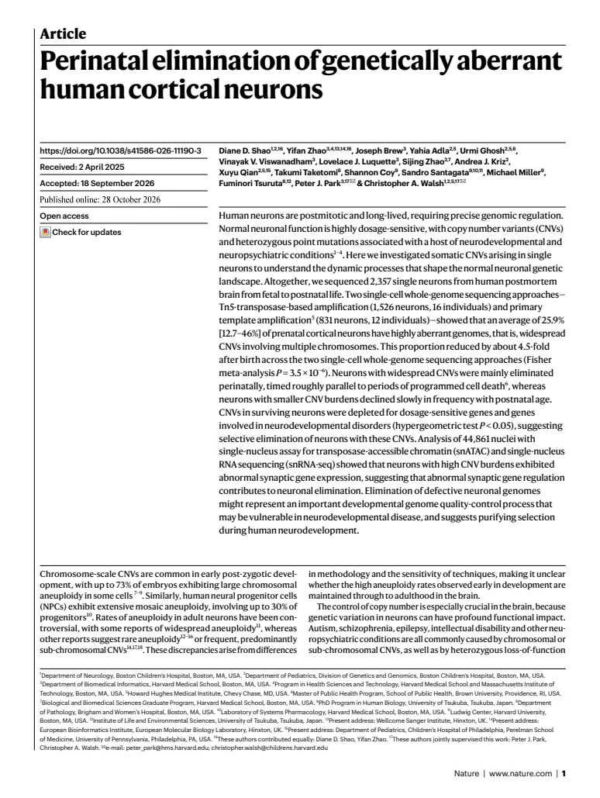
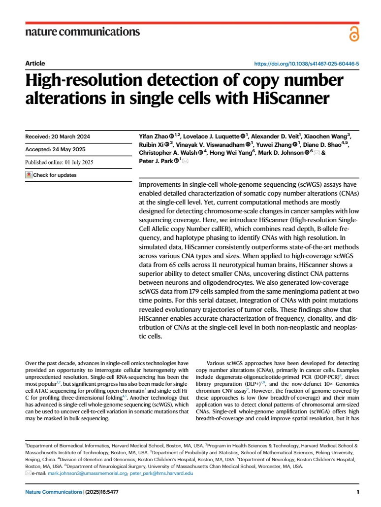
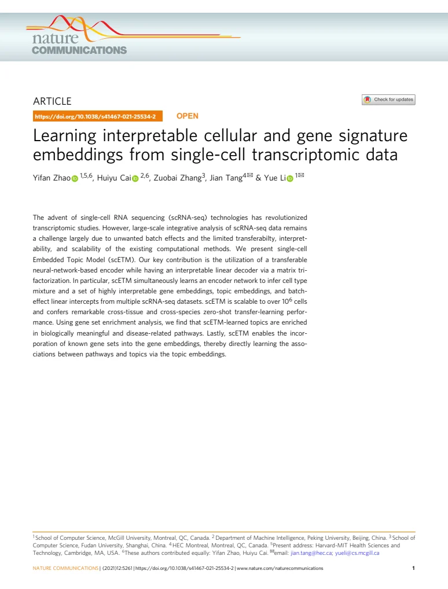

Publications
Selected work, followed by other publications and a preprint. An asterisk (*) indicates equal contribution.
Selected publications
-

Read PDF -
High-resolution detection of copy number alterations in single cells with HiScanner
Nature Communications, 16:5477 · 2025

Read PDF -
Learning interpretable cellular and gene signature embeddings from single-cell transcriptomic data
Nature Communications, 12:5261 · 2021

Read PDF
Other publications
-
Comprehensive benchmarking of somatic mutation detection by the SMaHT Network
Cell, 189:6594–6612.e21 · 2026
-
scE²TM improves single-cell embedding interpretability and reveals cellular perturbation signatures
Nature Communications, 17:9861 · 2026
-
Advances in single-cell DNA sequencing enable insights into human somatic mosaicism
Nature Reviews Genetics, 26(11):761–774 · 2025
-
The Somatic Mosaicism across Human Tissues Network
Nature, 643(8070):47–59 · 2025
-
Combined somatic mutation and transcriptome analysis reveals region-specific differences in clonal architecture in human cortex
Cell Reports, 44(11):116458 · 2025
-
Single-cell genome sequencing of human neurons identifies somatic point mutation and indel enrichment in regulatory elements
Nature Genetics, 54(10):1564–1571 · 2022
-
Live-cell imaging and analysis of germline stem cell mitosis in Caenorhabditis elegans
Bio-Protocol, 12(1):e4272 · 2022
-
CentTracker: a trainable, machine-learning-based tool for large-scale analyses of Caenorhabditis elegans germline stem cell mitosis
Molecular Biology of the Cell, 32(9):915–930 · 2021
-
A comprehensive view of somatic mosaicism by single-cell DNA analysis
bioRxiv · 2026 · Preprint